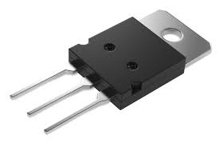

заметки для вовы
пожалуйста вова не бросай блять питон
print
(
"привет мир!"
)
print выводит аргумент в консоль
консоль:
привет мир!
x
=
6
print
(
x
)
переменная хранит значение как коробка, используя типы данных
типы данных в python:
| Тип данных | Пример | Описание |
|---|---|---|
| int | 42 | Целые числа |
| float | 3.14 | Числа с плавающей точкой |
| str | "привет" | Текстовые строки |
| bool | True/False | Логические значения |
| list | [1, 2, 3] | Списки |
| tuple | (1, 2, 3) | Неизменяемые последовательности |
| dict | {"key": "value"} | Словари |
| set | set(1, 2, 3) | Неупорядоченное множество уникальных элементов |
input это input XD
response =
input
(
"input: "
)
print
(
response
)
input запрашивает значение у пользователя и в качестве подсказки показывает переданный аргумент
if это условное выражение - если аргумент переданный ему равен True то код сработает иначе будет else, если else нету то else равен None
if
#тут передается аргумент
:
print
(
True
)
else
#аргумента не принимает
:
print
(
False
)
расмотрим пример:
res
=
input
(
"write: "
)
if
res
==
"beba"
:
print
(
"text is beba!"
)
else
#если не равен beba
:
print
(
"text is not beba!"
)
если вводимое значение равно beba то виведется "text is beba!" иначе "text is not beba!"
| Оператор | Значение | Пример |
|---|---|---|
| == | Равно | 5 == 5 # True |
| != | Не равно | 5 != 3 # True |
| > | Больше | 5 > 3 # True |
| < | Меньше | 3 < 5 # True |
| >= | Больше или равно | 5 >= 5 # True |
| <= | Меньше или равно | 3 <= 5 # True |
Операторы сравнения возвращают булево значение (True или False)
x
=
5
y
=
3
print
(
x
>
y
)
# выведет: True
их ты уже разобрал однако о них нужно поговорить
булевые значения True и False в Python внутренне представлены как 1 и 0. В компьютере они хранятся в виде битов (0 и 1). Это основа двоичной логики, на которой работают все компьютеры.
Транзисторы в процессоре работают как электронные переключатели: когда ток течет - это логическая 1 (True), когда нет тока - это логический 0 (False). Именно так компьютер выполняет все вычисления.
булевые значения имеют несколько полезных функций
if
5 = 5
and
6 = 6
:
#делает что то если оба аргумента True